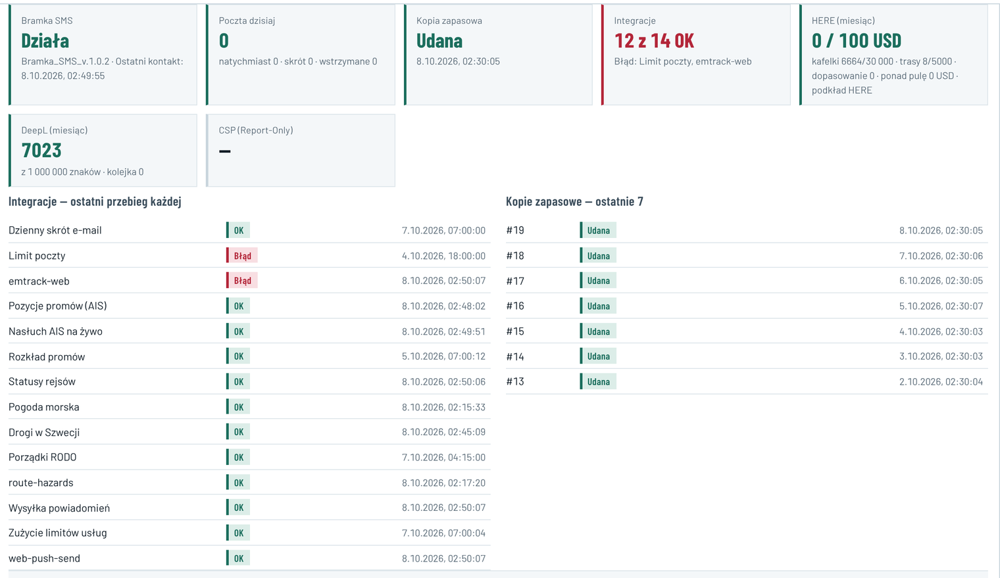

| Na liście | W bazie |
|---|---|
| emtrack-web Błąd | Od 08.10, 00:00 serwis odrzuca logowanie co 2 min (84 z 84 prób). Ostatnia pozycja naczepy (SG-03): 07.10, 21:23. Dziś żaden transport nie jest w drodze. |
| Limit poczty Błąd | Jedyny wpis z 04.10, 18:00 (ostrzeżenie o limicie). To zadanie nie ma harmonogramu, więc „Błąd” wisi od 4 dni. |
| Pogoda morska OK | DMI odmawia (za dużo zapytań, HTTP 429) w 16 z 16 przebiegów doby, a od 02.10 w 97 ze 103. Fala i wiatr liczone tylko z FMI. W dobie zadanie startowało 24 razy, a wynik zapisało 16 razy. |
| Nasłuch AIS na żywo OK | Dla Steny Ebby, Estelle i Spirit ostatnia pozycja z tego źródła ma 225–304 min. Mapa i tak pokazuje świeże dane ze źródła Stena (7–12 min). |
| route-hazards OK | Ostrzeżenie w 24 z 24 przebiegów: brak serii wiatru drogowego. |
| (brak) | Drogi w Polsce: nie ma takiego zadania (E2). |
| Co | Fakty | Skutek |
|---|---|---|
| Strażnik zadań | Co godzinę pilnuje 4 zadań: AIS promów, wysyłki e-maili, kontroli limitów i kopii zapasowej. Pozostałych 13 zadań, które zapisują wynik, nie pilnuje. Tylko on wysyła e-mail z alarmem. | telematyka, pogoda, drogi, statusy rejsów — bez e-maila |
| emtrack od 00:00 | Dwie otwarte sprawy: z 00:00 i z 02:00. Klucz sprawy zawiera datę UTC, więc o północy UTC (02:00 w Polsce) powstała druga. Odbiorcy HHL: 14 wpisów w dzwonku (0 przeczytanych), 2 powiadomienia push, 0 e-maili, 0 SMS. | po 2 h 51 min 0 przeczytanych, e-maila nie było |
| Stena (IRM), 07.10 | Sprawa „Źródło niedostępne: pozycje promów Stena” otwierała się 3 razy (12:03, 17:39, 20:57) i zamykała po 3 min. Odbiorcy: WSZYSCY. 76 wpisów w dzwonku, w tym 24 u KSH i 12 u SCX, i 6 push. Przyczyna: 3 odpowiedzi HTTP 502 serwisu Stena. | techniczna przerwa jednego z 3 źródeł widoczna dla klienta i przewoźnika |
| Bramka SMS, 05.10 | „Bramka SMS milczy” 4 razy w ciągu 3 godzin (03:55–06:44), każda sprawa zamknięta po 1–3 min. | sprawa miga: otwiera się i znika |
| Rodzaj „błąd zadania” | Otwartych 41: 34 to „Decyzja po terminie” (eskalacje spraw), 2 to emtrack, 5 inne (błędy przeglądarek, SMS bez potwierdzenia). | awarie techniczne giną wśród spraw |
| Źródło | Zasila | Ostatnie dane | Stan | Przyczyna i skutek | |
|---|---|---|---|---|---|
| Telematyka naczep emtrack · co 2 min | pozycje naczep na Mapie i w panelu, etapy drogi | 07.10, 21:23 | Nie działa od 00:00 · 2 h 51 min | Serwis odrzuca logowanie (84 próby z rzędu). Dziś żaden transport nie jest w drodze. Pierwszy wyjazd ruszy bez pozycji. | Sprawdź teraz |
| Limit poczty przy wysyłce i co godzinę | e-maile do użytkowników | 04.10, 18:00 | Brak pomiaru od 4 dni | Zadanie nie ma harmonogramu, więc stary wynik nie jest „Błędem”. Po zmianie pomiar co godzinę. | |
| Pogoda morska co godzinę | fala i wiatr na rejsach, sprawy promowe | 02:15 | Częściowo od 06.10, 14:16 | DMI odmawia (za dużo zapytań) w każdym przebiegu, dane tylko z FMI (10 punktów). 8 z 24 godzin bez wyniku. | Szczegóły |
| Zagrożenia na trasie co godzinę | wiatr drogowy, mosty, przejazdy | 02:17 | Częściowo od 05.10, 14:17 | Brak serii wiatru drogowego w każdym przebiegu. Próg 15 m/s nie jest sprawdzany. | Szczegóły |
| Pozycje promów 3 źródła · 1–3 min | promy na Mapie, rejsy w pasku | 3–12 min temu | Działa | Liczy się najświeższe z 3 źródeł (Stena, AIS, Digitraffic). AIS dla statków Steny bez danych od 4–5 h, ale to źródło zapasowe. | |
| Statusy rejsów co 10 min | opóźnienia i odwołania | 02:50 | Działa | ||
| Rozkład promów co tydzień | rejsy do wyboru | 05.10, 07:00 | Działa | Następny przebieg 12.10, 07:00. | |
| Drogi w Szwecji co 15 min | utrudnienia na trasie SE | 02:45 | Działa | ||
| Drogi w Polsce | utrudnienia na trasie PL | — | Bez źródła | Zadania nie ma (E2). | |
| Ceny paliwa raz dziennie | opłata paliwowa | 07.10, 07:15 | Działa | ||
| Bramka SMS co minutę | SMS do kierowców i HHL | 02:49 | Działa | ||
| Kopia zapasowa raz dziennie | — | 02:30 | Działa |
| „Nie działa” | Dane starsze niż próg albo 5 nieudanych prób z rzędu. Progi: telematyka 10 min, promy 15 min, statusy rejsów 30 min, drogi SE 45 min, pogoda 3 h, ceny paliwa 26 h, rozkład 8 dni. |
| Jedna sprawa | Jedna otwarta sprawa na źródło, bez daty w kluczu. Otwiera się po progu. Zamyka się po 15 min poprawnej pracy, więc nie miga. |
| Kto widzi | Sprawy techniczne tylko HHL. KSH i SCX widzą skutek przy swoim transporcie, np. „pozycja z 21:23” (E29), a nie awarię źródła. |
| Kto dostaje alarm | Administratorzy HHL: e-mail i push przy otwarciu, przypomnienie po 2 h, wiadomość „Wróciło” przy zamknięciu. Pytanie 1 |
| Strażnik | Pilnuje wszystkich zadań, nie 4. Brak wyniku zadania to też alarm. |
| Eskalacje | „Decyzja po terminie” dostaje własny rodzaj sprawy. Nie jest liczona jako błąd zadania. |